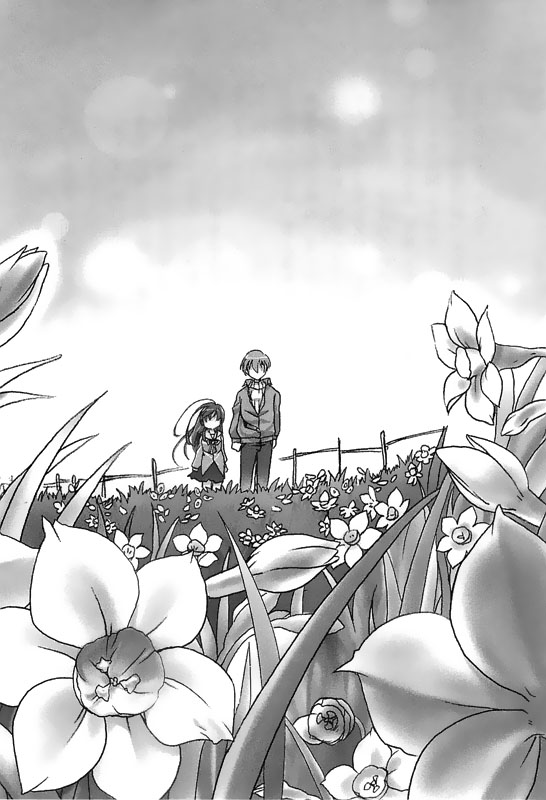
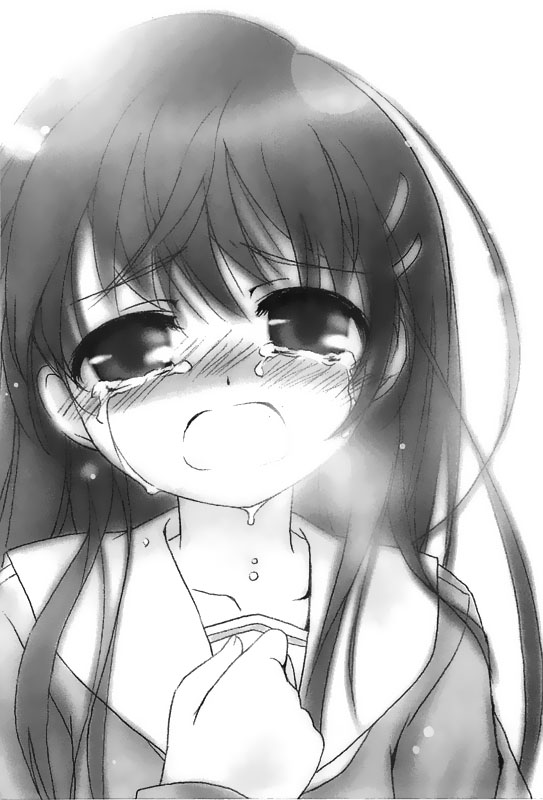

回到顶部

前往底部

07.週末の過ごし方より


车子从濑津美练车的那一处小沙滩出发，自刚入夜一直开到了深夜，我们终于来到了此行的目的地——可以看到水仙的地方。
这里理应是一处观光区，不过不知道我们所处的这一带是不是已经算是外围区域了，或者是因为时间晚了，周围完全看不见其他人的身影。
宁静的夜里，我和濑津美两人待在车内，静静等这个天的晨光升起。
「喂，我们为什么不开灯呀？」濑津美问。
「因为电池快没电了嘛。」我说。
「喔，这样啊……」
我关掉了引擎，此时车内和车外一样是一片漆黑，只剩下仪表盘上微微的光源打在我和濑津美的脸上，让我可以稍微看见她朦胧的侧脸。
熄灯了，引擎也熄了。我们待在狭窄的车厢内，话也没说几句，就只是静静地等待这漫长的黑夜过去。
后座散放着我日前偷摸来的衣服。我们一人从中抓了几件布料较厚的牛仔裤、毛衣，还有廉价的毛巾，充当棉被包裹在自己身上。
「很冷吧？」我问。
「……嗯。」
「那你要不要过来坐到我的身上？」
「咦……」
「来嘛，没关系啦。」
我看她一个人坐在副驾驶座上都冷得发抖了，于是要她坐到我的大腿上。
「这样应该会比较暖和一些吧？」
「…………」
她先是沉默了一会儿，然后才出声开口拒绝：
「不用了……我没关系。」
然而，她嘴上说着自己不冷，身体却不断地打着哆嗦。
我们呼出来的气体在车内化成了白色的水气，怎么看也知道她在逞强。
「……还是你觉得冷要我过去？」这会儿换她开口问道。
「嗯……好啦，我觉得冷，你过来啦。」
「……那好吧。」
说完，她慢慢爬过来坐到了我的大腿上，带着些许的顾忌整个人蜷了一圈。
「怎么样？这样是不是暖和些了？」
「……嗯。」
外头的低温和车内的温度落差将六面挡风玻璃全染成了白色，凝结的水气加上朦胧的黑夜，窗外更是什么也看不见了。
不过就快天亮了。我想，等到早晨的阳光洒下，外头一定是整片整片的白花吧。
——夜色一点一点褪去。
太阳从东边的地平线下蹦了出来，将天边从带紫色的黑色缓缓重新漆成整片的米白色。
天亮了。眼前成遍的白色花丛也终于展露了它的全貌。此时，夜晚漆黑的世界忽然变得不再纯粹，一抹充满跃动感的白色和黄色鲜明地烙在我的视觉影像当中。我和她忍不住推开车门走了出去，不透过车窗玻璃，而是透过我们活生生的眼睛直视着眼前的这片景致。
「好壮观呀……」我说。
「……嗯。」
这里遍地开满了不计其数的水仙花。朝露反射着晨曦，让这片白色的花丛显得更加耀眼。直教人联想到一面直朝着海洋中心铺去的白色绒毯。
我们停足在这片令人目眩神迷的景致之中，彼此交换的言语在吐出来的瞬间也全部都成了白色的水气，和眼前的景致融成一体——这天，我们终于亲身来到日前在无聊的电视节目中看到的风景里头。在这趟旅程之初完全没有明确目的地情况下，最终竟也来到了这里。
「……这些花都是同一种花吧？」
「嗯……就细微特征来看，每朵花都是一样的。」
「是吗？太好了……」
我不清楚花与花之间的品种差异，不过……相较于那天电视荧幕中映出的，完美无缺的那片花田，此时满布在我们眼前的花丛虽然有大有小；有全开的，有半开的，也许不是那么样的完美，但它却是活生生地绽放在我们眼前。
「好漂亮……」濑津美忍不住发出了赞叹。
「……是啊。」
世界——在捉摸不定、平凡且无聊的现实生活中，它对待每个人都是以同样冷静的眼光和无情的态度，其间充斥着许多我们肉眼无法看见的，或者伸手无法触及的思绪。然而，现在我们不但可以摸到它，甚至还可以感觉到那些肉眼无法看见的片段思绪，就散落在这片壮阔的景致中……
——二月三日洲本市南淡路水仙线——
天空下着雨，绵密的雨丝将冬季的天空染成了白茫茫一片，我们在这里待了两天，哪儿也没去。因为我们没办法行动。
「咳咳！」
「喂！你还好吧？」
「嗯……还好。」
濑津美的身体状况开始恶化了，我们将副驾驶座的椅背向后倒，让她躺着休息。这两天，车子也都几乎没办法开，一直停留在这一带。
她其实有吃药，不过似乎没什么效果，恶化的情况始终没有好转……我看，这大概已经不是药的种类够不够齐，药量吃得够不够的问题了。
我和她都是七楼病房——临终疗养病房的病患。就算没经过这几天的折腾，以她已经出院住院两次的情况来看，什么时候会步入这般田地其实也都没什么好惊讶的……
「我说……你会想回去吗？」我对着濑津美问。
「……你呢？你想回去吗？」
「嗯，是有点想。」
「想回去哪里？七楼？还是自己的家里……」
「这个……这个………」
……老实说，我不知道，我只知道这是我们早晚终将面临的结局。对濑津美而言是如此，对我来说也是一样，然而，现在我只能看着一旁仰躺在副驾驶座上的她，什么事也不能做。这让我觉得格外难受。
——啪当……我走出车外。呼出的气息旋即化成了白色的水气；冰冷的雨滴浇在我的脸上。我挺直了身子抬头仰望着天空。「……现在，我到底该怎么办才好呢……」
……我不知道。我不知道我到底是不是该强行把她带回医院里，还是就这么让她留在这里，自始至终陪在她的身边——话说回来，其实我也正面临着同样的问题。也许，我其实该选择和她一起走向生命的终点……
我从口袋里头掏出了手机，在通话记录中翻出了日前从这里拨出去的号码。那是她曾经用我的手机拨出去的号码。
——嘟嘟嘟嘟嘟嘟嘟嘟……
「您好，这里是佐仓家。」
「……………………」
「喂？请问您哪里找？」
我无法做出适切的判断，因此不自觉地便掏出手机拨出了号码。然而，电话接通之后我却不知道到底该如何开口寻求协助……
「——喂？是濑津美吗！还是阿东？」
「……我是阿东。伯母，好久不见。」
我做了一次深呼吸，然后对着手机向濑津美的母亲打了招呼。
「是啊，好久不见，你们那边现在情况怎么样？」
「这边现在正在下雨。」
「这边也开始下了，不过现在雨水都已经冻成雪了。」
我听到伯母提到雪，于是跟着抬头望了一下天空——也许现在这边下的也是雪吧……我茫然地猜想着，然后下定决心把我想说的话吐了出来。
「其实……我想跟您说濑津美的事……」
「没关系啦，你们不用在意。」
「咦？」
我什么也还来不及说，伯母便开口先堵住了我的嘴。
「还是说，濑津美是不是对你做了什么任性的要求？」
「不，那倒没有……」
「这样啊……那……如果濑津美对你做出了什么无理的要求……我可以拜托你顺着她的意吗？」
「………………」
…………
我结束了这通电话，带着身上冰冷的雨水坐回到了车上。
——她从没有打从心底展露过笑容。
——她从没有好好任性过一次……
我想起了曾经从伯母口中听过的话。
——二月四日洲本市面上南淡路水仙线——
绵绵细雨似乎并没有停止的迹象，仍持续从黑色的夜空中不断洒下。车窗外的水仙花田，在雨雾氤氲中呈现出朦胧的白色，非常耀眼。
「喂，这些花——水仙花的学名是……」我伸手指向前挡风玻璃外头的那一片白花田，「是叫作Narcissus吗？」
「嗯……这个名字的由来是源自于希腊神话的一名美男子。」
「……希腊神话中的美男子？」
Narcissus——经她这么说，我似乎有点印象了。虽然不常听到，但我确实听过这个名字。
「……他的名字是译作纳西瑟斯对吧？」
「嗯，不过关于他的神话故事有很多版本就是了……」
听到她的解释之后，我露出了佩服的表情，继续听她说下去。
「少年纳西瑟拥有无与伦比的美貌，因此不论谁看到他都会为他着迷……而妖精艾可的心灵也成了他的俘虏。然而，艾可每次开口，吐出的言词永远都只能重复对方所说的话……」
「……只能重复对方所说的话？」
「是啊。所以……如果纳西瑟斯不对她先开口说出爱她，那么艾可是无法对他表达自己的爱意的……」
濑津美道出这段故事时，脸上的表情写出了些许的寂寞，呢喃的语句听来也多了些哀凄的味道，那一双美丽的眼眸似乎又回到了从前，将目光空洞地聚焦在不知名的远方。
「可是……这是不可能实现的……无论艾可对纳西瑟斯怀有多么深刻的爱恋和憧憬，这样的爱情是不会有结果的……于是，她最后对纳西瑟斯下了诅咒。」
「……结果故事就这么迈入了众所皆知的结局，让纳西瑟斯就此爱上了自己在泉水中映出的倒影了是吗？」
「后来……纳西瑟斯离不开水边，看着看着，最后变成了一株美丽的花朵，就是水仙花……它的学名，Narcissus就这么来的。」
说完之后，她稍顺了一下呼吸。处在一旁听完这个故事的我，心情上也感染了些许的落寞之情。
「……艾可……她心里藏着永远无法开花结果的爱恋——就好像没有未来的我们一样。」
「后来呢？艾可怎么了？」
「消失了……在纳西瑟斯受到诅咒之后。」
……消失了？
——消失，这样的结局究竟意味着什么样的意涵呢……她诅咒了纳西瑟斯，最后什么也没得到，就连纳西瑟斯也陷入了不幸的结果……
「……怎么了吗？」她问。
「没有啦……可是你不一样吧？」
「……嗯？」
「你之前不是问过我吗——问我会不会诅咒自己这般没有一丝丝希望的命运……那你呢？你不一样吧？」
「那个……」
「……怎么样？」
「……嗯……因为我已经不抱任何希望了。」
她脱口说出了最后一句话，接着又将视线再次移向了窗外，什么话也不说地默默注视着夜雨不断拍打着白色花丛。
「……我的时间停止流动了。」
几次不同的季节更替，白蒙蒙的梅雨也几度盘据了整片天空，然后消失。我在这里，日复一日地过着不需要和任何人交谈的生活……
「即便我永远阖上了双眼，这个世界也不会因我而停止转动……」
我捂住耳朵也无法阻止雨声进入我的脑中——我知道……我知道我所渴望的一切都无法实现。因此我不羡慕……
我不羡慕比基尼泳装；不羡慕翡翠色的海滩；不羡慕带着愉悦笑容摆出撩人姿势的杂志封面模特儿。我不羡慕……
我知道，只要我永远闭上眼睛之后，就算没有地图也没有汽车，我也可以去任何地方。
因此，即便我胸前那道长长的伤痕不提醒我；即便我就好比希腊神话里头的回声妖精，艾可，而眼前不可能实现的现实永远只是我对纳西瑟斯无法开花结果的爱……
「……我也绝不会……对这辈子与我无缘的期待怀抱希望……也绝对不会诅咒这个不会同我一起消失的世界……」
……然而，这个早已许下的决定，如今……曾几何时却开始出现了松动的危机……
——我身上原本已经停止流动的时间，此时又开始了起来……在这个随时都会步入终点的时刻……
……所谓的伤口……
似乎切痕越深，愈合所需的时间也就越久……那么像我这样大半辈子都是在医院度过的人呢——像我这样在心里画下了一道长长的伤痕，让自己和现实世界分离的人呢……
我是不是再也不可能拥有健康的心灵——再也无法取回真挚的笑容了……
「……像我这样过了二十二年的人生……究竟会变得怎样呢……」
——二月六日洲本市南淡路水仙线——
「咳咳……咳咳……」
「喂！你没事吧？」
黎明前，我听到濑津美咳嗽咳得厉害，伸手轻抚着坐在副驾驶座上的她的背部。
时间又过了两天，之前从莳绘小姐那里拿到的药也已经吃完了。当时她还告诉我，这种口服药已经是药效最强的一种了，不过现在看来，它对濑津美来说已经没有什么效果了……
——不过比起什么事也不做，再拿些药总比没有来得好些……我抱持着这样的念头取出手机正打算联络莳绘小姐，同时也伸手抓住钥匙，准备发动引擎，然而……
「……不用了啦……」
一个孱弱的声音出声制止了我的动作。
「可是你这样下去……」我说。
「……反正这些药再吃也没什么用了。」
「话、话是这么说没错，可是……」
其实情况就如同她所说的那样，再吃同样的药也不会带来什么实质上的效益才对。然而，要我就这么什么事也不能做地袖手旁观，我实在坐立难安……
「那、那我们到别的地方去吧？好吗？」
「……别的地方？」
「对，什么地方都好，然后你再帮我指路好了！」
我试图在言语中多灌注一些活力，精神饱满的程度连我自己都觉得可笑。
她侧着脸望向窗外，将视线焦点提到了遥远的彼方。我望着她，一个人唱着独角戏地表现出了亢奋的情绪，对着她做出了这样的提案。
……然而，我知道这么做一点意义也没有。因为，就算我真让她打起精神来多撑过一些时日，顶多也是将两天后即将结束的生命多延长一天而已。关于这点……我其实再清楚不过了……
「你说说看，你想去哪里？」我问。
「……我没想去哪里……」
「对了——对了！你喜欢车子吧？那我们再回到高速公路上去跑一跑如何？一定可以看到很多很炫的车才对！」
「……不用了啦……」
「………………」
我沉默了一会儿。
「——那、那这样好了，我们再去买些衣服吧？你也会想要新衣服吧？」
「………………」
听到我再次提出了新的建议，她也沉默了一会才又开口：「不用啦……」
「……什么不用了……你……」
她丢下了那句话之后，又将视线移回到了窗外。然而，她的目光并非落在外面那片水仙花田上，而是像从前的她一样，带着空洞的视线望向不知名的远方——同时，再也不把头转回来了……
「……为什么……为什么你总是这样……为什么你口中永远都只会说『不用了』三个字……」
「………………」
「稍、稍微积极一点不是也很好吗？为什么你不这么做呢！」
不知不觉之中，我说话的音量已经越提越高——我觉得有些生气……有些悲哀，不知道为什么……
一向对于眼前的现实无法拥有深切的体认的我，此时却觉得内心无比沉痛……
车厢内再一次陷入了沉默。
窗外满布着开在冬季的花朵，一月的水仙花——Narcissus。它们在黎明前的雨夜轻轻地荡漾着，勾勒出了一片白茫茫的景致。
她望向窗外，视线穿过了这片白色的花田，聚焦在更远的彼方。
万籁无声的夜里，除了海潮拍打在岸边、细碎的水声之外什么也听不见……
「……积极一点……我怎么可能这么做呢……」
「咦……」
一片漆黑的车厢里头，濑津美的声音忽然传入了我的耳中。
「如果我怀抱着希望，拼命地努力追寻之后可以获得回报，那我也许真的该积极一点……可是……可是如果所有的期望都不可能实现的时候，你叫我到底怎能么办呢？我没有办法坚强到在付出了努力，怀抱着期望却落空的时候，还能笑着说这也是没办法的呀……」
她将空洞地望向远处的视线移回来集中落到我的身上，一双真挚的眼眸从副驾驶座那头直视着我。
「在这样的命运之中，我唯一的选择就只有一开始就舍弃了所有的期待，放弃了所有的希望……然后带着冷淡的态度看着自己，告诉自己这一切都有是没办法的事——难道不是吗？」
「……你……」
「呜、呜……呜呜呜……」
她哭了，这是我第一次看到她哭，那张不论何时永远都面无表情的脸庞，此时竟带着肩膀传来的颤抖，不断地流着眼泪。
「在一切都结束的时候……我难道不能为自己留一个藉口，让自己说……如果我那时候有好好努力过的话，今天也许不会这样……我难道就不能为毫无希望的人生留下一个只是我自己没有积极争取的推托之词吗——因为我知道这一开始就什么也不可能实现嘛……这样难道不好吗？」
我透过车厢中的前挡风玻璃望向黎明前的夜空，一轮明月仍高高挂着。
万籁俱寂的夜里，除了时而从远方飘来的海潮之声，耳边唯一还听得见的，就只有她无助的啜泣了。
一切对她而言，也许就好比无法靠自己意志说话的艾可。现实世界给她什么，她才能祈求什么。
她无法主动开口央求，因此她不存在有任何希望，不看任何她得不到的东西；她甚至不祈祷，也不埋怨……因为她除了放弃一切之外，没有任何方法可以让自己从绝望中挣脱。
因此她拒绝回家，也拒绝回到医院，这是她第一次，也是最后一次对这样的人生做出的抵抗。
